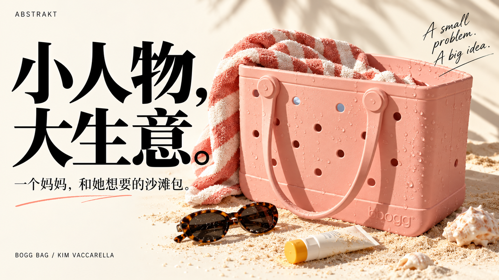
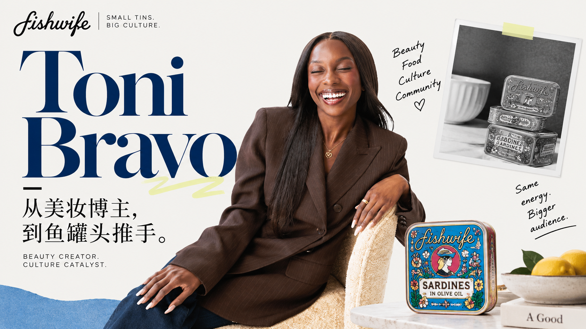

BUSINESS / PEOPLE / CULTURE
把海外生意，
讲成看得见的人和事。
从一个生活难题，到一门品牌生意。读懂那些让消费者愿意买单的故事。

01 / 小人物，大生意 · 约 5 分钟
一个妈妈嫌沙滩包太难用，最后做出了年销过亿美元的生意
Kim Vaccarella 怎样从自己的生活难题里，做出一个被许多人需要的沙滩包。
阅读全文 →
02 / 品牌观察 · 约 8 分钟
卖鱼罐头的，怎么找上了美妆博主？
一个人的日常，如何成为另一些人的购买理由。ABSTRAKT 英式编辑版。
阅读全文 →